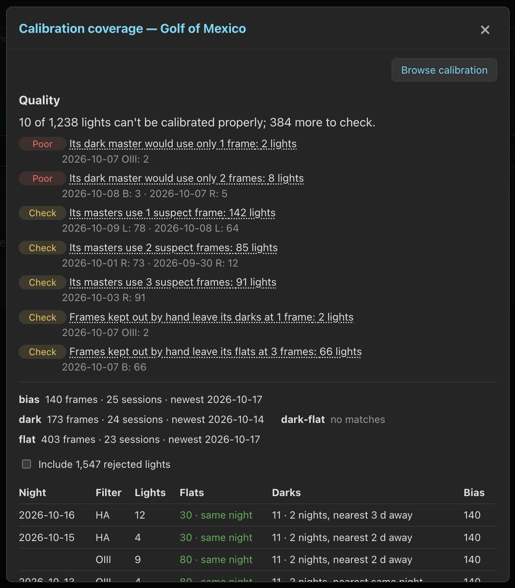

Calibration Grades & Coverage
Review calibration frame grades, check which lights have matching calibration, and decide which frames to keep.
Calibration guides
- Calibration Libraries
- Calibration Grades & Coverage
- Flats & Dust Changes
- Calibration Masters & Settings
Frame grades
PSF Guard grades every raw bias, dark, dark flat and flat against the frames that should agree with it. Masters from other software get no grade.
| Grade | Meaning |
|---|---|
| OK | Nothing crossed a limit. |
| Suspect | Something crossed the first limit. The frame stays in use, and the lights its masters serve get a Check. |
| Poor | Something crossed the second limit. Masters, WBPP exports and calibration reports leave the frame out, and stacks that used it build again. |
Grading compares a flat with the other flats of its session, and a bias, dark or dark flat with every frame that could stand in for it, from any night. Most checks need three or more peers. Flat grading ignores temperature: a flat shot with the cooler off can still be good.
| Setting | Measures | Suspect | Poor |
|---|---|---|---|
| Bias level | Distance from the set's level, in the set's noise | 1 | 3 |
| Bias noise, Dark noise | Noise as a ratio to its peers' | 1.1 | 1.3 |
| Bias banding, Dark banding | Row or column banding as a ratio to the frame's noise | 0.25 | 0.5 |
| Dark stray light | Level above the quietest peer, in the frame's spread | 0.5 | 1 |
| Dark hot pixels | Hot pixels as a ratio to its peers' | 1.5 | 3 |
| Flat clipping | Share of samples at full scale | 0.05% | 0.5% |
| Flat too bright | Brightest channel, share of a 16-bit full scale | 80% | 92% |
| Flat too dim | Dimmest channel, share of full scale; lower is worse | 10% | 3% |
| Flat light pattern | Light pattern off the session's | 2% | 5% |
| Flat spots | Clear spots in one flat | 100 | 500 |
| Flat changing spots | Spots in one flat that change across its session | 3 | 20 |
| Carried flat spots | Changing spots in most of a set's flats, which its master keeps | 1 | 10 |
The limits sit under Settings › Calibration › Frame grades; an empty limit is never reached. Grading runs in the background when the server starts and after imports, forgets and remote uploads, and gives way to work you started. A changed limit grades again from the stored numbers. An ungraded frame stays in use.
Keep out, Use anyway, Clear
An editor can overrule a grade from the frame's panel:
| Button | Effect | Badge |
|---|---|---|
| Keep out | Leaves the frame out of masters and exports whatever its grade, as rejecting does for a light. Every frame offers it, so a later grade cannot bring a frame back. Unlike Forget, the frame stays in the library. | Kept out by hand |
| Use anyway | On a frame kept out, puts it back in use. On a suspect frame, overrides the grade to OK, and lights using its masters no longer get a Check for suspect frames. Its masters stay as they were. | Used anyway |
| Clear | Lets the grade decide again. | — |
A choice survives regrading and rescans, and travels with Merge catalogs and sync pull. Leaving a frame out rebuilds its master and every stack that used it; the stack card lists the frames left out and why. Grades never stop calibration: a light they leave with no flat, or with neither bias nor dark, is one that can't be calibrated.
Darks that caught stray light
A dark shot while light reached the sensor, such as dawn through an open roof or a cap left off, has the right headers. Its pixel levels exceed the bias level, often rising with each frame. A master built from these darks can subtract too much background from the lights, leaving negative values and uneven shading that later appears as colored corners.
A dark more than one noise sigma above the quietest frame that could stand in for it, from any night, grades Poor · stray light, so a morning whose darks all leaked is still caught by a clean set from another night. A lone frame with nothing to compare against stays in use. The frame panel gives each dark's level and spread in ADU beside its session's, and Use anyway puts such a dark back into its master.
Calibration health
In the background, PSF Guard matches every light that is not rejected as a stack would, and judges what it would get. Poor means the light can't be calibrated properly; Check means it is worth a look and still calibrates. A light takes its worst finding, and a project its worst light.
| Light check | Default | Flags a light when |
|---|---|---|
| No frames for its camera | Poor | Nothing matches its camera and settings, though the library holds frames for other cameras. |
| No matching flat | Poor | No flat matches, though there are flats for its camera. |
| No matching bias or dark | Poor | Neither matches, though the library has some. |
| Flats past the age limit | Poor | Its flats are further from it than Flat age limit (60 days). |
| Thin dark master | Poor | Its dark master would use fewer frames than Thin master (5). |
| Thin bias master | Poor without a dark, Check with one | Its bias master would use fewer than 5 frames. |
| Changing spots in flats | As Carried flat spots grades it | Spots that come and go across its flats, such as drying dew, end up in the master. |
| Old flats | Check | Its flats are further than Flat age warning (30 days). |
| Flats from several nights | Check | Its master mixes nights not measured against each other. |
| Flats from across a change | Check | Its flats come from the other side of a change, or its side is unknown. |
| Suspect frames in its masters | Check | Its masters take suspect frames no one chose to use anyway. |
| Short after keeping frames out | Check | Frames kept out by hand leave a master under the thin limit. |
The marks show in four places:
- Library: a 🧪 Poor or 🧪 Check pill after the grading and date pills opens the project's coverage report. Show › Calibration issues lists only those projects.
- Images, Sequence and a mosaic's sequence: a 🧪 chip under the score chips, red for Poor and yellow for Check. Hover it for its findings; click it to open the light on its Calibration panel. View › Chips turns it on and off.
- Images: the Calibration filter keeps Poor lights, Check lights, or both.
- Sequence: Select › Poor calibration picks those lights for Review rejection. It reads (updating) until the check has caught up.
The check runs again after each grading pass, when a grade, a choice, a validity mark or a setting changes, and when a light's missing file turns up. It reads only the lights whose file changed.
A light's Calibration panel
An image's detail view has a Calibration panel. It lists findings in order of severity. For each calibration type, it shows the frames PSF Guard would use to build a master, grouped by night and sensor temperature. It also lists frames Kept out, those that Also match, not used, and those Refused, with the reason for each decision. Click a night to open its frames on the Calibration page. Choose a finding to highlight the frames that caused it, such as the two nights a flat master mixes, and stays chosen from image to image; Show every kind shows the rest again.
The panel shows which settings PSF Guard used to check the light (Checked
by the global settings, or by the rig's own), each limit that differs from
its default and who set it, and lists suppressed findings under Not
flagged. For each refused match, it shows the limit that failed: dark
is 3.2 °C warmer than the light (limit 2 °C, set for Askar 120 · ASI2600MM).
Tune checks for the rig opens its settings. For flats the panel adds
Flat family, Chosen by and Choose its
flats. It opens by itself on a Poor or Check light, and when you come from
the 🧪 chip.
Check coverage for a project
Click Calibration on a project's full card in the Library, or its 🧪 pill. The report uses the same matcher as a stack, so it shows what would apply, not just what files exist. Browse calibration, at its top, opens the Calibration page on that project.
- Quality lists each health finding with its lights by night and filter, and opens those lights in Images.
- Per kind: how many frames match, how many sessions they span, and the newest.
- Per night and filter: the flat set a master would use, how far it is from the lights, and whether the night has its own flats. The dark column shows what one dark master would use; hover for every matching dark within reach.
- A night with no flats shows the nearest flat the match refused only for its rotator angle, how far off it is, and the limit: the usual cause when a rotator moved.
- Each night lists the masters from other software that fit its lights:
used, matching but not used, or not used with the readings that
disagree, such as
rotation light=92.6deg master=94.7deg. - For each night and filter with lights that cannot be calibrated, the report explains why. Click the entry to open those lights in Images.
Warnings list kinds with no matches, nights without same-night flats, and flats more than a month from their lights. The report leaves rejected lights out, so a night rejected for cloud does not show as lacking flats; Include N rejected lights adds them back.

Lights that can't be calibrated
A light can't be calibrated when a check set to flag Poor finds a gap: no flat, though the library contains flats for its camera, as when every flat for its filter was shot at another rotator angle; no bias or dark, though the library contains bias or dark frames; or flats further away than Flat age limit (60 days; 0 lifts it). Each rule counts only where the library could have filled the gap, so a rig that never shoots flats is not affected. A check set to Check only or Off never marks a light as lacking calibration.
Check lights, at the foot of the report, lists the project's lights that can't be calibrated, by night, filter and reason. Reject N lights then rejects them with that reason, so Target Scheduler shoots them again. If the lights changed since the check, it refuses and asks for a new check. Rejecting needs write access; agents have the same check over MCP.
Stacks keep such lights unless Leave out lights that can't be calibrated, under Settings › Calibration › Stacks and exports, is on. It is off by default. With it on, and calibration on Auto or Force on, stacks leave those lights out: the card counts them under can't calibrate, and Frame decisions gives each one's reason. Every export leaves out the same lights.